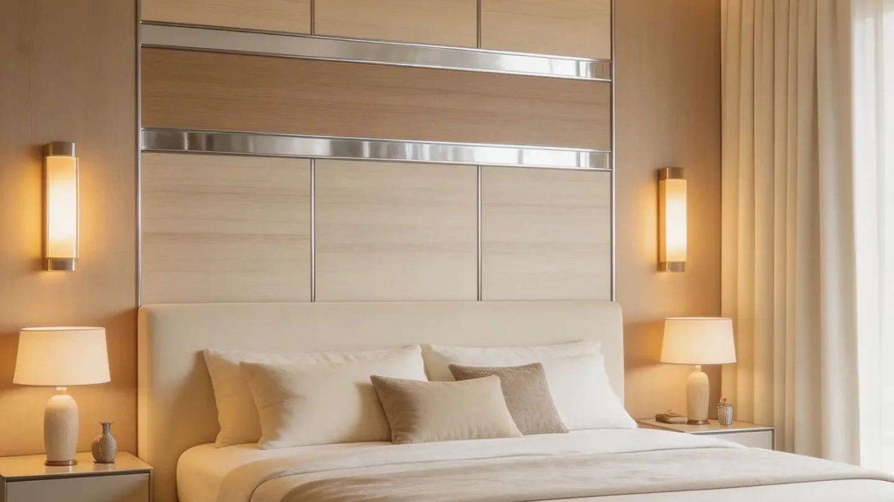

Bedroom Feature Wall Panels: Layout, Lighting and Ordering
This bedroom case explains how to turn a decorative wall-panel idea into an order-ready composition by coordinating panel width, bedside furniture, lighting, sockets, trims and repeatable finish references.

A balanced bedroom feature wall uses the bed as the main centerline, controls the number of materials, and resolves every socket, bedside light and edge before production. A fluted or decorative panel can add depth, while a calmer companion surface keeps the room comfortable rather than visually busy.
1. Design from the bed position outward
Begin with the finished bed width, bedside tables and the wall's visible dimensions. Decide whether the feature wall should be symmetrical, deliberately offset or divided into a central panel with side zones. This composition should be drawn before selecting carton quantities.
Mark switches, sockets, wall lights, air-conditioning controls and access points. Narrow flutes or strong patterns can make small alignment errors obvious, so the profile module should be coordinated with these fixed positions.
2. Limit the material language
One textured panel and one calmer companion finish are often enough. Wood-look fluted panels can create warmth; stone-look or plain panels can add contrast; metal-color trims can provide a controlled separation line. Too many unrelated finishes can weaken the focal point and make replacement stock harder to manage.
Ask for coordinated samples and view them beside the flooring, furniture and fabric palette. Screen colors are not an approval standard.
3. Test lighting and shadow
Bedside pendants, concealed strips and ceiling downlights change how grooves and gloss appear. Review the sample from the normal entrance and bed position under lighting similar to the finished room. A deep profile may look dramatic with grazing light but too dark if the room has limited general illumination.
If an LED strip is part of the detail, its channel, driver access, heat management and installation responsibility must be resolved by the project team. The wall panel should not be used to conceal an unresolved electrical detail.
4. Plan joints, trims and future access
Draw the top, bottom and side termination. Confirm whether the wall meets paint, ceiling, skirting, wardrobe or another panel. Coordinate inside corners and exposed ends with matching trims or approved custom details.
For rental apartments or repeat developments, use clear product codes and retain a labeled reference. This helps purchasing teams repeat the same room type and gives maintenance teams a better chance of identifying replacement material.
Buyer checklist for a bedroom feature wall
- Finished wall width and height
- Bed, bedside table and wardrobe positions
- Switches, sockets, lights and access points
- Panel profile, net coverage and installation direction
- Approved physical color, texture and gloss reference
- Starts, ends, corners, skirting and ceiling transitions
- Substrate condition and installation method
- Carton rounding, cutting allowance and repair reserve
Questions buyers ask
Which panel is best for a bedroom feature wall?
The best choice depends on the desired finish, profile depth, substrate, installation method, budget and destination requirements. Approve the exact SKU and system, not only the color.
Should lighting be reviewed with the sample?
Yes. Directional light changes the shadows, gloss and perceived color of fluted and decorative surfaces.
Can the same detail be repeated across an apartment project?
Yes, when room dimensions, panel modules, electrical positions, trims and approved finish references are standardized and recorded.
Convert your feature-wall reference into a sample and trim list.
Send the wall dimensions, room image or drawing, preferred style and estimated quantity. Luvie can help organize the product and order questions before quotation.
WhatsApp +30 6947135317